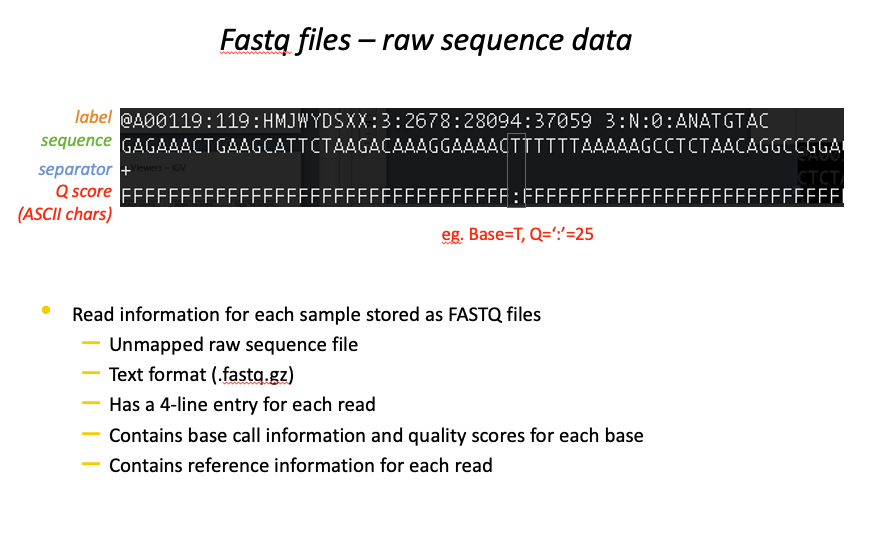

nfRNAseq

https://nf-co.re/rnaseq/3.14.0
nf-core/RNAseq the most popular nf-core pipeline.
nf-core list -s stars1. Merge re-sequenced FastQ files (cat)
2. Sub-sample FastQ files and auto-infer strandedness (fq, Salmon)
3. Read QC (FastQC)
4. UMI extraction (UMI-tools)
5. Adapter and quality trimming (Trim Galore!)
6. Removal of genome contaminants (BBSplit)
7. Removal of ribosomal RNA (SortMeRNA)
8. Choice of multiple alignment and quantification routes:
1. STAR -> Salmon
2. STAR -> RSEM
3. HiSAT2 -> NO QUANTIFICATION
9. Sort and index alignments (SAMtools)
10. UMI-based deduplication (UMI-tools)
11. Duplicate read marking (picard MarkDuplicates)
12. Transcript assembly and quantification (StringTie)
13. Create bigWig coverage files (BEDTools, bedGraphToBigWig)
14. Extensive quality control:
1. RSeQC
2. Qualimap
3. dupRadar
4. Preseq
5. DESeq2
15. Pseudoalignment and quantification (Salmon or ‘Kallisto’; optional)
16. Present QC for raw read, alignment, gene biotype, sample similarity, and strand-specificity checks (MultiQC, R)
In this section we will work through setting up the nf-core/RNAseq pipeline. We will be chosing specific parameters and finally, going through was the output looks like.
setting up nf-core/RNAseq
dataset
The dataset used throughout this workshop is as follow:
- 16 Samples sequenced with an MGI400 sequencer at SAGC using the Tecan Universal RNA-seq library protocol.
- 2 different cancer cell lines (human)
- treatment vs control
- 4 replicates for eachNOTE some concessions had to be made to work with this for workshop. Taking into account the large file sizes, the long run times and need for high compute resources.
what are the inputs to an RNAseq pipeline
.fastq /.fastq.gz

.fasta
.gtf
.bed

Genomic file formats
- now that we have gone through how to run the nf-core/RNAseq pipeline. Let’s look at the inputs and outputs in detail.
- using this chance to describe what are the key genomic file formats used in RNAseq and beyond
- Knowing what these files are isn’t only important in finding which files to use for a pipeline, but a key foundation of genomic bioinformati$
- being able to use and manipulate each file open’s up many opportunities, and is often required for troubleshooting wehn something has gone w$
- many files are plain text files, this means they can be manipluated with basic text editing. I’ll be going through some examples.
- For a more visual perspective, we’ll also be using a genome browser, IGV (Integrative Genome Browser) to get a feel for what information eac$
bam